光罩 / 经济性墙
芯片图形要通过光刻设备一块一块曝光，单次曝光面积存在物理边界。逻辑裸片越大，一处随机缺陷拖累整颗芯片的概率越高；而输入输出、模拟电路和部分缓存即使换到最先进节点，收益也未必与计算核心相同。
Chiplet 的做法是按功能拆分：把最需要先进制程的计算留在新节点，其余功能放在更合适的工艺上，再通过封装重新组合。投资人互动课 · 信息截至 2026-09-05
它正在把计算、存储、互连、供电和散热压进一个系统，成为 AI 芯片性能、交付与利润率的共同约束。
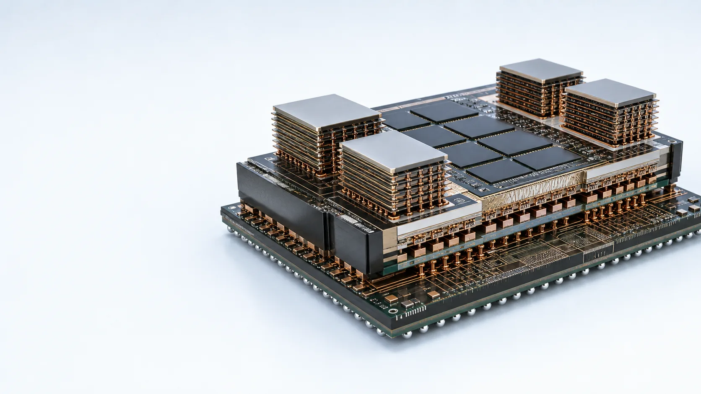
点击热点查看术语解释
01 · WHY NOW
先进制程仍重要，但它已经无法单独解决芯片尺寸、数据搬运、互连功耗与散热问题。先进封装的任务，是把这些约束放在同一个系统里优化。
芯片图形要通过光刻设备一块一块曝光，单次曝光面积存在物理边界。逻辑裸片越大，一处随机缺陷拖累整颗芯片的概率越高；而输入输出、模拟电路和部分缓存即使换到最先进节点，收益也未必与计算核心相同。
Chiplet 的做法是按功能拆分：把最需要先进制程的计算留在新节点，其余功能放在更合适的工艺上，再通过封装重新组合。计算单元每秒能做的运算越来越多，但模型参数和中间结果仍要从内存送到计算核心。数据来不及到达时，大量运算单元只能空等；这也是为什么“峰值算力很高”不一定等于应用跑得快。
HBM 把多层内存放到计算芯片旁边，用超宽接口并行传送数据，重点解决的是供数速度和每次搬运的能耗。高速电信号在主板上走得越远，越容易衰减和失真，需要 SerDes、均衡、重定时等电路把信号“扶正”。这些电路本身也消耗功率并增加延迟，因此系统扩展后，连接可能比计算更耗电。
2.5D、3D 把高频通信缩短到封装内部；光 I/O 则在需要走远路时尽早把电信号转换成光。更高功率集中在有限面积内，会形成局部热点；大电流穿过基板和供电网络时还会出现压降。不同材料受热后的伸缩幅度不同，又会引起翘曲、界面疲劳和焊点可靠性问题。
散热器、液冷、供电网络、基板材料与芯片摆位必须共同设计，因为封装完成后再补救，通常既昂贵又受空间限制。通俗比喻：让数据每天跨城通勤，路再宽也会堵；把内存搬到“园区隔壁”，才是封装的核心价值。
02 · INSIDE THE PACKAGE
从上到下依次是计算与存储、微型连接、中介层、封装基板和焊球。每一层都可能成为性能、良率或交付瓶颈。
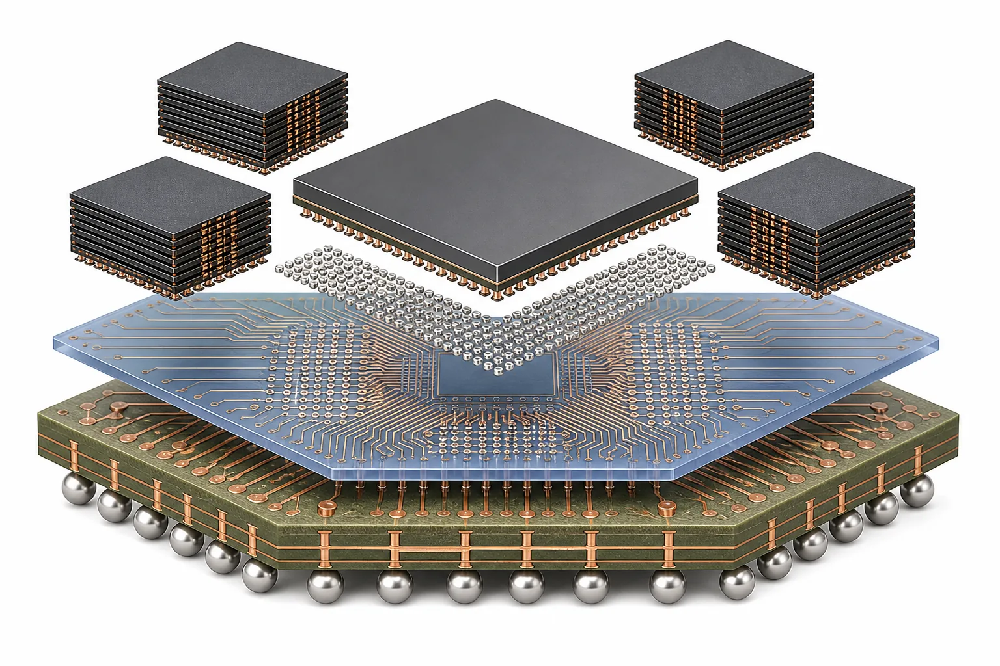
逻辑裸片 / LOGIC DIE
GPU、CPU 或定制 ASIC 都在这里执行计算，但分工不同：GPU 擅长大量相似任务并行运行，CPU 负责控制、调度和复杂分支，ASIC 则把特定算法直接做成专用电路，以换取更高效率。
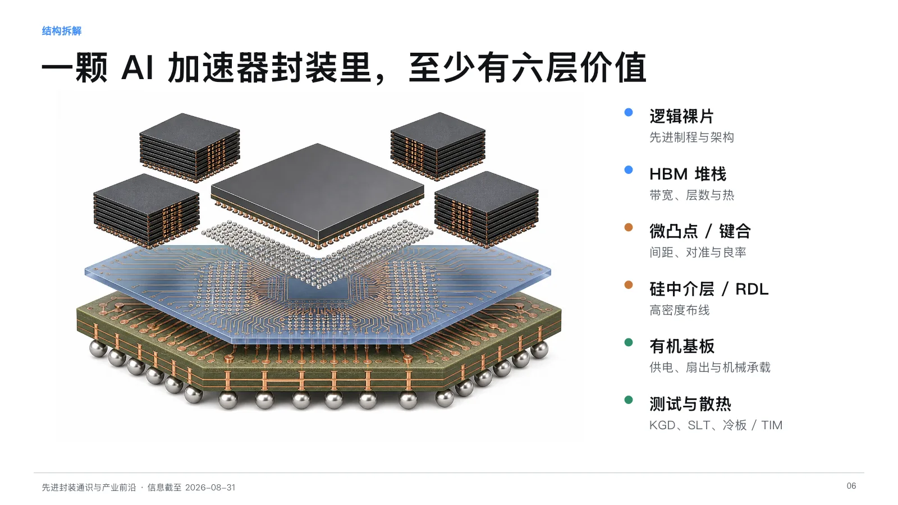
芯片层计算与存储
互连层微凸点、RDL、中介层
承载层基板、焊球、主板
隐形层供电、散热、测试与设计工具
03 · VENDOR ROUTE MAP
同样叫先进封装，AI 加速器、HBM、CPO、3D 堆叠、存算一体和玻璃基板解决的不是同一件事。点击领域，先看结构，再看厂商进度。
THE CONNECTING METHOD · 再看连接方法
2.5D、3D、扇出和硅桥描述的是芯粒在空间中怎样摆放、线路铺在哪里；UCIe 描述的是芯粒如何交换数据。前者像道路和建筑结构，后者像通信规则。只有物理连接、接口协议、供电、散热与测试一起完成，多个 Chiplet 才能表现得像一颗完整芯片。
裸片正面朝下，以凸点直接连接承载层，信号不再绕到芯片边缘再走引线。它适合单裸片或复杂度较低的组合，也是更高级封装继续向上发展的基础。
先把裸片放入重构载体，再在芯片上方和周围制作再布线层，把很密的芯片焊盘“展开”为更大的连接区域。它可以做得较薄，但大面积细线、介质变形和裸片位移很难控制。
逻辑裸片与 HBM 并排，中间通过高密线路连接。整片硅中介层像完整高速路网，局部硅桥则只在最拥挤的路口铺高密线路；二者在面积、成本和制造复杂度上各有取舍。
把芯片上下叠放，能让缓存、计算或 I/O 之间的连接变得极短。代价是热量更难排出、上下层必须精确对准，而且被夹在中间的连接一旦失效，检测与返修都更困难。
| 路线 | 基本结构 | 典型用途 | 主要优势 | 主要风险 |
|---|---|---|---|---|
| 铺一整块高密硅“地基” | GPU / ASIC + 多组 HBM | 布线密度与信号完整性好 | 成本、面积、TSV、翘曲 | |
| 只在关键路口放硅桥 | 超大多芯粒系统 | 扩展面积，减少整片硅 | 桥接对准、跨层布线 | |
| 在重构晶圆/面板上重新布线 | 移动、网络、成本敏感集成 | 薄、灵活、潜在成本低 | 细线、聚合物膨胀、良率 | |
| 绝缘层贴合 + 铜点直连 | 逻辑堆叠、缓存、未来 HBM | 互连最短、密度最高 | 洁净度、平坦度、返修、热 |
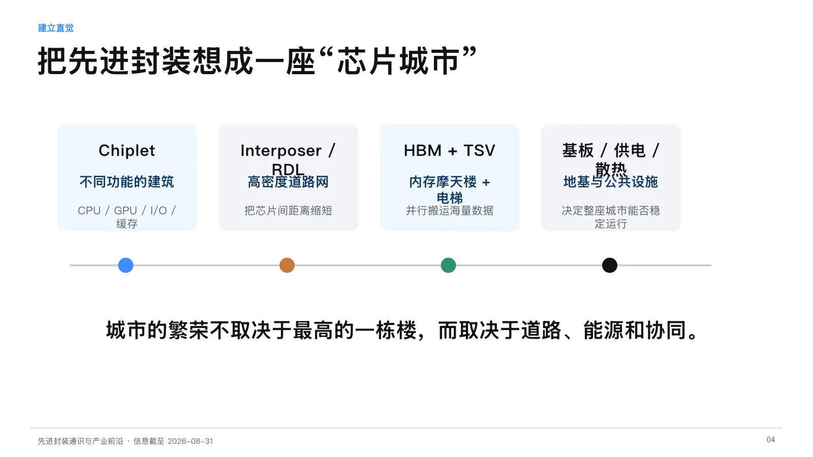
04 · HBM ENGINE
HBM 不是一颗普通内存，而是 DRAM 堆栈、TSV、底层逻辑、键合、封装与测试的复合产品。它把“窄而快的车道”变成“上千条并行车道”。
每层 DRAM 都是经过减薄的存储裸片，保存模型参数、中间结果和缓存数据。它们不是十二颗各自工作的普通内存，而是被组织成一套共同接口的堆栈；任何一层失效，都可能影响整组 HBM 的可用容量或性能。
TSV 通过深孔刻蚀、绝缘和金属填充，在硅片内部形成上下贯通的导电通道。它让多层 DRAM 不必把信号绕到边缘再连接，但也带来硅片减薄、通孔应力、对准和电气完整性问题。
逻辑基底位于存储层下方，承接宽接口、命令地址、数据通路和部分测试或修复功能。进入 HBM4 后，它与先进逻辑工艺和客户定制的关系更紧密，因此 HBM 已不只是“堆叠 DRAM”。
制造过程要在堆叠前尽量筛掉不良裸片，在堆叠后检查垂直连接，再与中介层和计算芯片共同封装。最后还要在高带宽、温度变化和真实负载下验证，才能发现普通通断测试看不到的问题。
HBM4 不是单纯把一根信号线跑得更快，而是把大量输入输出通道并行铺开。逻辑芯片与内存通过中介层近距离相连，可以在同一时间搬运更多数据，并减少远距离板级传输的能量消耗。
层数增加可以提高容量，但每一层都要经过减薄、垂直连接和可靠键合。堆栈增高后，热路径、翘曲、机械应力与测试覆盖会相互影响，不能只把它理解为“多放几层内存”。
最终结果由多片 DRAM、逻辑基底、TSV、键合、封装和测试共同决定。前段筛选越充分，越能避免好芯片与坏芯片一起报废；后段还要验证高速接口和长期可靠性。
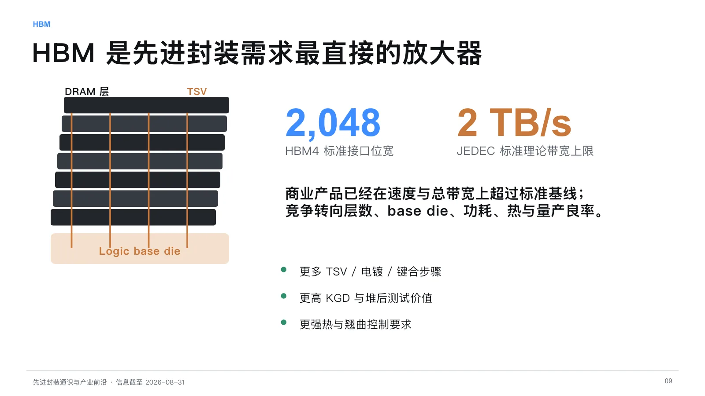
05 · CHIPLET + UCIE
拆分可以提高复用、选择更合适的工艺并缩短产品迭代；代价是接口开销、封装协同、测试与系统良率。
拆分不是把大芯片随意切开，而是按计算、输入输出、缓存或模拟功能重新划分。不同模块可以选择更合适的工艺并复用成熟设计，也能降低超大单片因局部缺陷而整颗报废的风险。
每增加一颗芯粒，就多出高速收发、电源、时钟、封装走线和测试边界。接口设计若不合理，原本节省的制造成本可能被额外功耗、延迟、面积和系统调试重新吃掉。
UCIe
UCIe 规定芯粒之间如何在物理层发送电信号、如何管理链路，以及上层数据采用什么协议。这样可以减少每家公司都从头设计接口的重复工作，也为不同来源的芯粒协作建立共同基础。
但 UCIe 不是封装本身：芯粒的尺寸、供电、时钟、散热、测试、安全和软件仍需共同设计。符合标准也不表示任意两颗芯粒拿来就能直接拼装。
滑动数值，观察单位时间内通过的“数据脉冲”。GT/s 表示每秒完成多少次信号传输，不等同于应用可用带宽；还要扣除编码、协议和控制开销。64 GT/s 是标准上限，也不等于每个产品都会采用最高档速率。
最常见的做法是把计算、输入输出、缓存和模拟功能分开，但边界不能只按面积划分。通信频繁的模块如果被拆得太远，会产生大量跨芯粒流量，反而增加接口功耗和延迟。
Die-to-Die 接口包括发送接收电路、时钟、链路训练、错误检测和上层协议。因为距离很短，它可以比板级 SerDes 更节能；但线路、电源噪声和封装寄生仍会影响可达到的速率。
组装前要尽量完成晶圆测试和已知良品筛选，组装后又要确认芯粒之间的接口、供电与热行为。不同供应商的测试数据还需使用统一格式，才能定位问题来自哪颗裸片或哪一道封装工序。
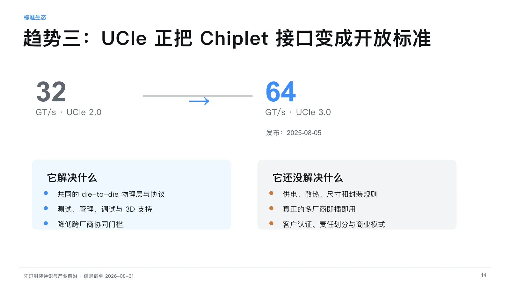
06 · HYBRID BONDING
微凸点像在两栋楼之间修许多小桥；混合键合则让绝缘层贴合、铜点直接相连。间距可更小，但表面洁净度、平坦度和对准要求显著提高。
工艺说明：实验室做到 2 µm 级间距，不等于该节点已经成为 HBM 主流量产。当前量产仍大量依赖微凸点 / TCB。晶圆到晶圆适合整片同时贴合，吞吐较高，但上下晶圆的版图和良率必须匹配；芯片到晶圆可先挑出已知良品再逐颗贴合，组合更灵活，却增加拾取、对准和节拍压力。
晶圆或裸片要经过减薄、化学机械抛光、清洗和表面活化。混合键合的连接点很小，一颗颗粒、局部凹坑或残留物都可能阻止界面贴合，形成空洞或开路。
设备要让上下层大量铜垫同时对准，并控制压力、温度和翘曲。与带焊料的微凸点相比，混合键合省去较高的焊料结构，电路径更短，但工艺窗口也更窄。
互连变密不只是缩小铜点。焊盘尺寸、上下层走线、供电网络、寄生电容、时钟分布和测试触点都要重新规划；只有这些规则同步调整，密连接才会转化为可用带宽。
制造端需要用光学、声学和电性方法检查空洞、偏移与断点，再通过热循环和应力测试确认长期可靠性。连接隐藏在两层芯片之间，使缺陷定位和返修明显难于传统平面封装。
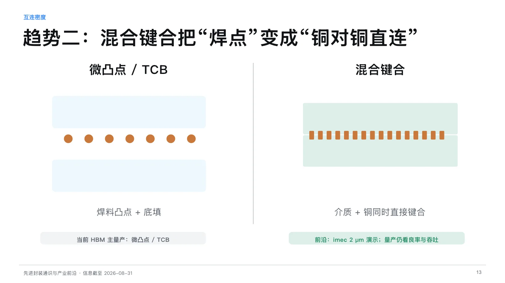
07 · FRONTIER
它们分别解决长距离电互连能耗、大尺寸制造效率、以及基板平整度与尺寸稳定性。商业化节奏差异很大，必须区分“已生产”“计划”“实验”。
CPO · CO-PACKAGED OPTICS
电信号在主板上跑得越远，越需要均衡、重定时和更强的驱动电路。CPO 把光子芯片与电子控制芯片移近交换或计算芯片，让最耗电的高速电路径缩短，再把数据转换成光送往机架或机柜之外。
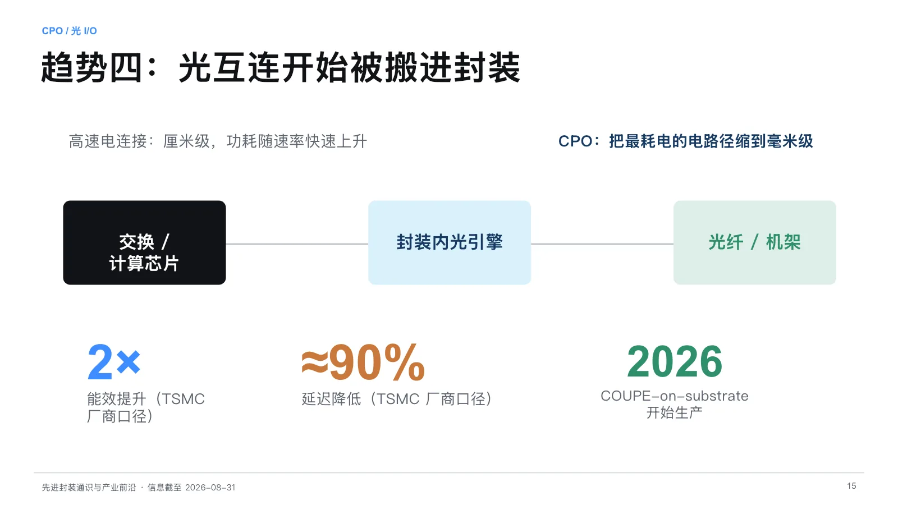
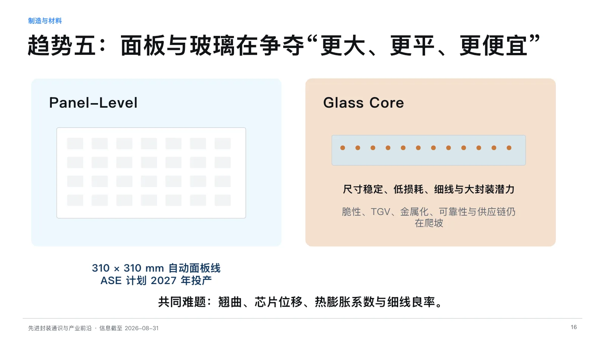
08 · 19-CASE PRODUCT BOOK
图片按官方公开结构教学重绘，并明确标注“已确认、路线图、教学重绘”。默认只显示 NVIDIA、CPO、HBM、存算一体、玻璃与华为韬定律六案。
Vera Rubin 不是一颗芯片的名字，而是一套从封装扩展到机架的系统。 是由计算裸片和 HBM4 组成的 GPU 封装； 是装有 1 颗 Vera CPU 与 2 颗 Rubin GPU 的主板级模块；NVL72 再把 72 颗 GPU 组织成单跳全互连系统。三个尺度使用不同连接：NV-HBI 服务封装内计算裸片，NVLink-C2C 连接 CPU 与 GPU，NVLink 6 则扩展 GPU 和机架网络。
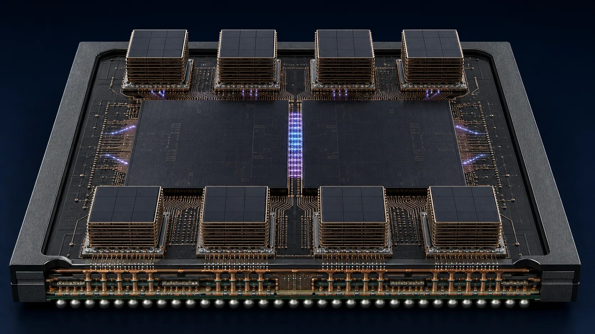
PUBLIC-ARCHITECTURE RECONSTRUCTION · NOT TO SCALEGPU PACKAGE
HOST PROCESSING MOTHERBOARD
1 × Vera CPU + 2 × Rubin GPU packages，通过内存一致的 NVLink-C2C 协同。公开上限为 576 GB HBM4、1.5 TB LPDDR5X，CPU—GPU 双向一致带宽 1.8 TB/s。
这里采用功能块图，CPU 封装内部与主板物理摆位并未按真实尺寸重绘。
NVIDIA 平台来源 ↗RACK-SCALE SYSTEM
每个计算托盘含 2 个 Superchip，即 4 GPU + 2 CPU；36 颗 NVLink 6 交换芯片把 72 GPU 组成单跳全互连。公开上限为 20.7 TB HBM4、1,580 TB/s HBM 带宽与 260 TB/s 机架 NVLink 带宽。
当前 NVL72 的 scale-up 主干仍以铜互连为主；Rubin Ultra 的多机架光互连属于后续路线图。
NVIDIA NVL72 规格 ↗封装内以 NV-HBI 合成一个 GPU
最高 22 TB/s；12-Hi
主板级，不是单封装
36 CPU + 36 NVLink switches
每颗 GPU 都把先进逻辑晶圆、HBM4、已知良品测试、2.5D 封装、基板、液冷与机架供电绑进同一交付链。Rubin Ultra 属于后续路线图，公开结构尚未完全定案，不能与当前 Rubin GPU 的已确认结构混写。
传统交换机让高速数据先沿主板铜线跑到前面板，再由可插拔模块完成电光转换；CPO 则把这个转换位置搬到交换芯片附近。它并不是把整条链路都做成光：交换 ASIC、电子控制芯片、光子芯片、激光和光纤连接器仍有明确分工。TSMC COUPE 提供光电集成与制造平台，Broadcom 再把该能力组合进具体交换产品。
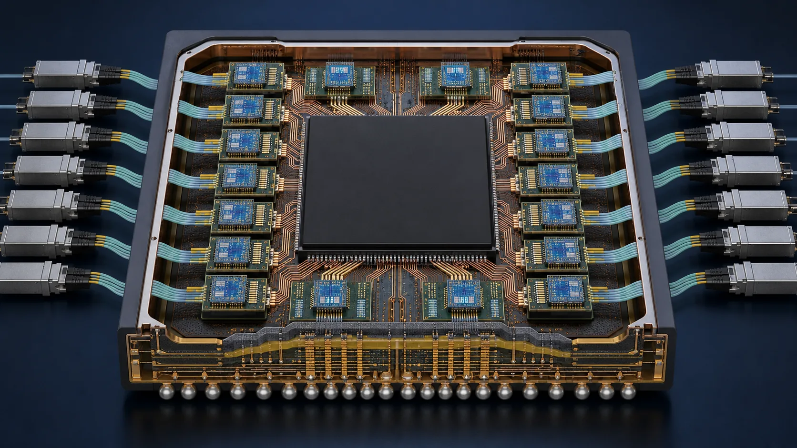
TEACHING RECONSTRUCTION · COMPONENT COUNT IS ILLUSTRATIVEMANUFACTURING PLATFORM × SWITCH PRODUCT
把光子芯片与电子控制芯片垂直集成成光引擎；Broadcom TH6-Davisson 再把 16 个 6.4T 光引擎与 102.4T 交换 ASIC 放在共同基板上。光子芯片负责调制与接收光，电子芯片负责驱动、控制和电接口，激光则可留在前面板，以 形式更换。
这种拆分既缩短了最耗电的高速电连接，又保留了独立更换激光的可能性；与此同时，耦光精度、封装热、光电联合测试和故障定位都会进入同一制造链。
TSMC 宣布 COUPE-on-substrate 在 2026 开始生产，不等于所有 COUPE 终端系统已规模量产。Davisson 公告标题称 shipping，但正文口径是向 early-access 客户送样。
Broadcom Davisson ↗TSMC COUPE ↗CPO 的核心不是“全都做进同一块硅”，而是把最耗电的高速电路缩短，再用光走远距离；激光、光引擎与光纤连接的维修域仍然不同。
| 平台 / 产品 | 公开结构 | 截至 2026-09-05 状态 | 技术状态说明 |
|---|---|---|---|
| TSMC COUPE-on-substrate | PIC + EIC 垂直集成光引擎 | 2026 生产导入 | 制造平台进入客户放量验证 |
| Broadcom TH5–Bailly | 51.2T ASIC + 8 × 6.4T 光引擎 | 选择性量产 | 已跨过纯实验阶段，但仍 Limited Release |
| Broadcom TH6–Davisson | 102.4T ASIC + 16 × 6.4T 光引擎 | 早期客户送样 | 关注何时转为明确 volume production |
增量价值从可插拔模块 DSP，部分迁向硅光 PIC、电子控制 EIC、3D 键合、先进基板、光纤阵列、ELSFP 与自动化光电测试。功耗必须分清“光互连层”与“整机层”，不能把 70% 光学节电直接当作整机节电。
HBM4 是一套共同制造的立体内存系统：多层 DRAM 保存数据，TSV 把各层纵向连通，逻辑基底负责宽接口、命令和数据调度，整组堆栈再通过中介层与 GPU 并排连接。增加层数可以提高容量，却也会让每层减薄、键合、翘曲、散热和测试相互牵制，因此展示出一只高层样品与长期稳定量产是两件不同的事。
THE STACK IS A YIELD CHAIN
12 个 DRAM core die 竖直堆在一个逻辑基底裸片上；（硅通孔）像贯穿楼层的电梯； 在凸点堆叠后把保护材料灌入并固化，帮助控制翘曲、压力和散热。
HBM4 的底层逻辑裸片开始采用 TSMC 先进逻辑工艺，为定制控制逻辑留下更多空间。宽接口需要大量并行连接从堆栈经过中介层抵达计算芯片；任何一层的薄化、垂直通道、键合或测试失效，都可能影响整栈。
HBM stack 与 GPU 在中介层上并排，不是直接叠在 GPU 顶部。这样有利于散热和并行布线，但会扩大中介层、基板与供电网络的面积和复杂度。
SK hynix HBM4 ↗SK hynix × TSMC ↗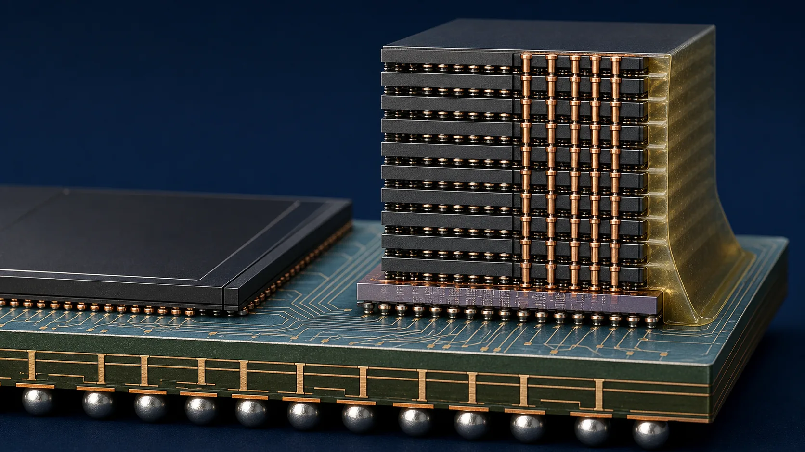
12-HI HBM4 TEACHING CUTAWAY · NOT TO SCALE16-Hi HBM4 为 48 GB，SK hynix 已展示实物与模型，但截至信息时点仍按客户节奏开发；混合键合是后续备选路径，不能标成当前 12-Hi HBM4 的量产必选工艺。
HBM4 的价值量从“DRAM 位元”继续外溢到逻辑基底裸片、TSV、薄化、MR-MUF、CoWoS 协同、已知良品测试与客户共同设计。层数越高，名义产能越不能代表可交付的整栈产能。
存算一体的共同目标是减少数据往返，但“把计算放在哪里”完全不同。把处理器放在内存附近；在 DRAM 内部或旁边加入数字运算；把计算嵌入高速片上存储；则利用阵列的电学行为完成特定运算。位置和实现方式不同，精度、容量、编程方式、适用任务与量产难度也完全不同。
数据不必反复离开 HBM；但公开系统倍数来自特定 Alveo 工作负载，不能横推全部模型。
官方来源 ↗数字 DRAM-PIM；特定 Alveo 测试接近 2.5×，厂商称能耗降逾 60%。
每颗芯片 32 个 PU，BF16 峰值 1 TFLOPS；AiMX 仍为原型卡。
每 DIMM 128 个可编程 DPU；适合能高度分区的整数型数据任务。
8 个数字 SRAM-CIM chiplet；面向低延迟大模型推理。
SRAM 存权重、金属电容做模拟矩阵运算；ADC 与校准是关键。
NOR Flash 模拟 CIM，权重常驻片上，主攻低功耗边缘场景。
必须同时看数值精度、稠密 / 稀疏、MAC 计数方法、峰值 / 实测、片内 / 主机可见带宽，以及端到端模型、batch、context 与整机功耗。UPMEM 的本地聚合带宽、d-Matrix 的片上 SRAM 带宽和 HBM 带宽不是同一个口径。
现实路径更可能是与 GPU 分工，而非整体替代 GPU：GPU 处理高计算强度阶段，PIM/CIM 处理数据搬运或内存受限阶段。不同方案应在相同模型、精度和服务要求下比较吞吐、延迟、整机功耗与软件覆盖，单个演示工作负载不能代表通用性能。
下面把同一套观察框架延伸到 GPU 多芯粒、桥接加堆叠、消费级双裸片、量产混合键合与晶圆级系统。
三代 GPU 都有 8 个 （真正做计算的小发动机），但底层 I/O、独立缓存裸片和 HBM 数量不断变化：封装的价值，正从“把芯片装起来”升级为“重新划分整颗系统”。
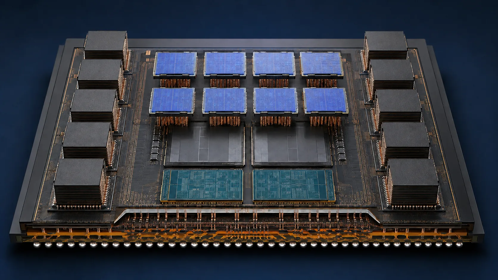
TEACHING RECONSTRUCTION · EXACT COUNTS ARE SHOWN IN THE ANIMATIONCDNA 3 → 4 → 5 → RACK SCALE
写实图只营造封装质感；公开资料没有给出可复刻的真实 floorplan。下方结构动画以官方组件计数为准。
AMD CDNA 5 白皮书 ↗Helios 官方页 ↗“3.5D”可通俗理解为：横向的 2.5D 共封装，再加纵向的 3D 堆叠。位置、比例与走线为教学示意。
XCD + IOD + HBM3
XCD + IOD + HBM3E
XCD + IOD + FCD + HBM4
18 CPU · 24 个托盘
XCD 数量保持 8 个，但底层功能裸片与 HBM 增多，价值持续向 HBM4、混合键合、CoWoS-L、KGD/测试、超大基板、液冷和机架互连迁移，同时放大整包良率与供应集中风险。
负责上下堆叠，像电梯； 只在相邻裸片之间做横向桥接，像局部立交桥。二者合起来，把不同工艺的计算、缓存、I/O 与 HBM 组成一颗 Data Center GPU Max。
2.5D BRIDGES + 3D STACKING
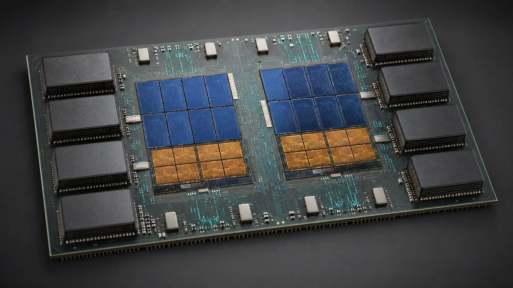
PUBLIC-ARCHITECTURE RECONSTRUCTION · NOT TO SCALE“47”不是 47 颗 GPU。Intel 的不同公开口径会把 11 个无源 EMIB 计入组件总数；课件统一称“47 个功能及互连 Tile”，另有 16 个不计算的 Thermal Die。
不能写成 47 颗主动芯片
完整配置最多 128 Xe Core
Max 1550 合计 128 GB
官方公开的微凸点间距
Ponte Vecchio 证明多工艺裸片、已知良品测试、2.5D 桥接与 3D 堆叠可以在数万颗级系统中共同量产。它的意义在能力迁移，而非这一代产品的新增销量。
Apple 用 把两颗完整 M2 Max 连接起来。超过 10,000 个封装内信号跨过硅中介层，开发者面对的是一个统一 SoC，而不是传统双处理器系统。
同样叫带宽，走的不是一条路：UltraFusion 的 >2.5 TB/s 是两颗裸片之间；800 GB/s 是 M2 Ultra 与统一内存之间。两者不能相加。
共同组成 M2 Ultra
跨硅中介层连接
低延迟裸片间带宽
系统带宽 800 GB/s
Apple 未公开中介层尺寸、覆盖范围、bump pitch、真实走线、链路协议或封装供应商。教学动画只表达“两颗—连接—统一软件视图”。
UltraFusion 展示的是“复用已验证大裸片”的 Chiplet 经济学；壁垒来自裸片互连、统一内存、操作系统与应用生态协同。Apple 未披露封装供应商，不能据此推算某家代工或 OSAT 份额。
采用无传统焊料微凸点的铜—铜混合键合与 TSV。第一代把缓存放在核心上方；第二代把缓存移到核心下方，让 Zen 5 核心更直接接触散热器。
热流箭头只解释设计方向，不代表温度测量；实际键合间距、铜点/TSV 数量、介质材料、裸片厚度与热阻均未公开。
与 CCD 原有 32 MB 合计 96 MB
第二代：缓存位于 CCD 下方
合计 1,152 MB L3
相对微凸点 3D，非第三方测量
3D V-Cache 证明混合键合已跨过实验室阶段。受益环节包括平坦化与清洁、精密对准、铜—铜键合、TSV、减薄、键合后检测、热管理与 KGD；但是否值得堆缓存仍取决于工作负载。
“晶圆级”只说明系统接近整片晶圆那么大。Cerebras 保留未切割硅并绕过缺陷；TSMC 首代逻辑 SoW 先选出好裸片再重排；SoW-X 则计划把 SoIC 计算模块与 HBM 一起扩到晶圆级。三条路线的良率逻辑完全不同。
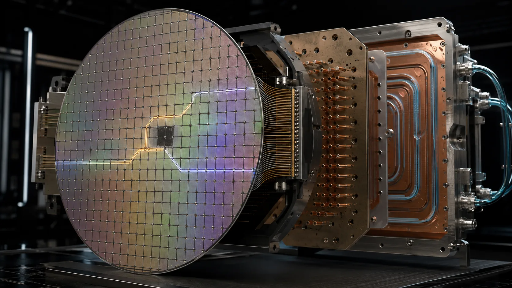
WAFER-SCALE TEACHING RECONSTRUCTION · NOT A DIE PHOTOTHREE ROUTES · THREE YIELD LOGICS
WSE-3 的外部 MemoryX 不是片上 HBM；第一代 logic SoW 也不应画入 HBM。SoW-X 尚属路线图。
Cerebras WSE-3 ↗TSMC 2026 路线图 ↗容错不是“没有缺陷”，而是隔离故障区并让数据绕行。动画只表达逻辑关系，不代表真实核心位置或布线。
| 路线 | 公开结构 | 截至 2026-09-05 状态 | 技术状态说明 |
|---|---|---|---|
| Cerebras WSE-3 / CS-3 | 未切割硅、跨光罩网络、分布式 SRAM、容错路由 | 已部署 | 有真实安装证据，但不等于已成为主流出货形态 |
| TSMC 第一代 logic SoW | KGD 阵列、重构晶圆、InFO / RDL、逻辑型 | 2024 已量产 | 工艺量产；客户、规模、良率与收入未公开 |
| TSMC SoW-X | CoWoS-based，目标组合 SoIC 与 HBM | 2029 路线图 | 等待客户、设计定案、认证与生产节点 |
晶圆级没有消灭良率：Cerebras 用冗余和绕行容忍局部缺陷；首代 SoW 把风险移到 KGD、重构、RDL、翘曲和最终测试；SoW-X 又加入 SoIC、HBM、供电与冷却的共同良率。
Intel 展示怎样拆、怎样收、怎样再立体扩展；HBM4 三强把竞争推进到逻辑基底；CPO 与 OSAT 重新划分封装边界；Dojo 则把封装、供电和冷却一起做成计算平面。
先进封装不是“Tile 越多越先进”。Meteor Lake 把客户端 SoC 拆成 4 个功能 Tile；Lunar Lake 收拢成 2 个主要逻辑 Tile，并把 LPDDR5X 搬进封装；Clearwater Forest 则用 向上叠、用 向左右桥接。
THREE PRODUCTS · THREE PARTITIONING CHOICES
三代“Tile 数”口径不同，不能把 4、2、12+3+2+12 放在同一柱状图直接排名；Intel 未公开的节点、pitch、真实尺寸和走线一律留白。
Intel Xeon 6+ 产品资料 ↗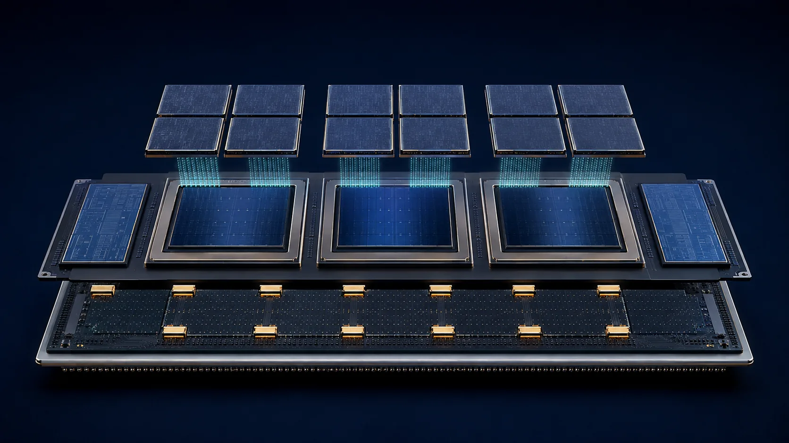
PUBLIC-ARCHITECTURE RECONSTRUCTION · EXACT COUNTS, NOT TO SCALE颜色表示功能，不表示制程；位置、尺寸和连接点数量是教学示意。Meteor Lake 产品资料未标 EMIB，因此动画不画横向硅桥。
Q4 2023 · Foveros
Q3 2024 · 最高 32GB
18A + Intel 3 + Intel 7
与 Direct 3D 组合
真正的壁垒是把最贵制程留给最需要缩放的计算，把缓存、互连与 I/O 放到更合适的节点，再把 KGD、混合键合、EMIB 装配、散热和系统测试共同做稳。
的共同地基来自 JEDEC：2,048-bit 宽接口、最多 16H。差异开始向 、封装工法、客户协同和整栈良率迁移。速度、容量和带宽必须分开看。
SK 的 11.7Gb/s 为 CES 演示值；Samsung 的 13Gb/s 是能力上限；Micron 公开为 >11Gb/s。三者不是统一量产分档，不能直接排冠军。
| 厂商 | 12H / 36GB 公开速度 | 逻辑基底 | 16H / 48GB | 商业状态 |
|---|---|---|---|---|
| SK hynix | 11.7Gb/s 演示；量产 bin 未披露 | TSMC 先进逻辑，节点未披露 | 实物展示 / 开发中 | 2026 Q2 起量产出货 |
| Samsung | 11.7 稳定；能力最高 13Gb/s | Samsung Foundry 4nm | 最高 48GB 规划 | 2026-02 商业出货 |
| Micron | >11Gb/s；>2.8TB/s | 自研自制先进 CMOS，节点未披露 | 48GB 已送样 | 2026 CQ1 批量出货 |
是单针速度，TB/s 是整堆带宽，GB 是容量。HBM 的“H”只数 DRAM 核心裸片，不包括底部逻辑基底。
竞争已从 DRAM 位元扩展到“DRAM + 逻辑基底 + 堆叠 + 测试 + 2.5D 客户共同设计”。16H 增加的不是四片硅这么简单，而是薄化、翘曲、散热与整栈良率同时收窄。
共同目标都是缩短最耗电的高速电路径，但“光被搬到谁身边”决定了完全不同的产品：交换机 CPO 围绕交换 ASIC；XPU CPO 与计算和 HBM 同基板；通用 则像给不同处理器外挂一扇光学窗口。
把光引擎搬近通常降低电损耗，但会把光纤装配、散热、测试和维修问题带进先进封装。
交换 ASIC 同封装硅光引擎；激光外置、可换并独立温控。公司点名 CoreWeave、Lambda 与 OCI 为首批采用方，但未披露端口出货量。
官方状态 ↗参考架构把 XPU、HBM 与 4 个 6.4T 光引擎放在共同基板；底层硅光量产史不能外推为本代 XPU CPO 已量产。
官方架构 ↗OFC 2024 与 Intel CPU 共封装演示，64 条 32Gb/s 双向通道、最高 4Tb/s；Intel 明确称 current chiplet is a prototype。
官方原型 ↗量产拐点先在交换机端出现明确口径；XPU 端仍要穿过多年系统验证。价值可能迁向 PIC、EIC、共封装、可拆光纤连接器、外置激光、自动化光电测试和整机冷却，但维修成本与现场可靠性必须一起算。
ASE、Amkor、JCET 都能说“高密度异构集成”，但真正要问的是：高密线路铺多大、用了多少硅、先做线路还是先放芯片，以及具体客户项目是否完成资格认证。
“更便宜”必须在相同芯片数、封装尺寸、线宽、层数、良率和测试边界下验证；官方平台宣传不足以给出统一冠军。
| 平台 | 最小正确结构描述 | 公开成熟度 | 不可外推 |
|---|---|---|---|
| ASE FOCoS-CF / CL | 扇出 RDL 模块再上 BGA；CF 先放 die，CL 先做 RDL | available now / test vehicle | 平台可用 ≠ 大型 AI/HBM 已规模量产 |
| ASE FOCoS-Bridge | 有机 RDL + 关键位置局部硅桥 | 公开 qualification | 70×78mm 资格结构 ≠ 客户量产 |
| Amkor S-SWIFT / S-Connect | chip-last RDL 模块；S-Connect 才加入局部桥 | 客户接洽 / qualification | 跨平台 5+ 客户不能全算给单一方案 |
| JCET XDFOI | 覆盖 RDL、硅转接板、硅桥与 2D/2.5D/3D 的平台家族 | 公司称稳定量产 | 家族量产 ≠ 每个子路线、每个 HBM 项目都量产 |
OSAT 胜负取决于能否把 RDL 光刻、电镀、翘曲、桥接对准、HBM KGD、供电散热和封装级/系统级测试一起做稳，并在客户认证后复制产能；品牌名本身不是技术规格。
Dojo 的关键不是“又一颗 AI 芯片”，而是把裸片间互连、供电、冷却与系统网络从一开始共同设计。5×5 个已知良品 D1 在同一 Training Tile 上横向通信，供电和冷却则垂直进入模块。
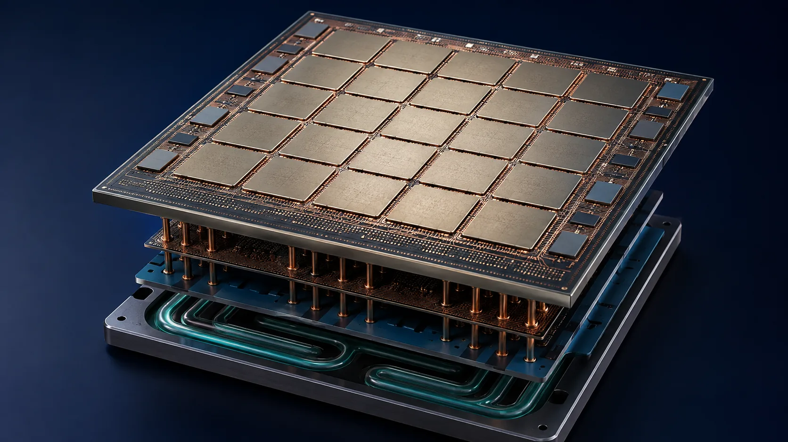
D1 TRAINING TILE TEACHING RECONSTRUCTION · EXACT 5×5 COUNT, NOT TO SCALECHIP → TILE → INTERFACE → SYSTEM
单颗裸片的 440MB SRAM 与独立 Interface Processor 上的 32GB HBM 是两层不同内存，不能相加后称“片上内存”。
440MB SRAM · 645mm²
5×5 known-good D1
垂直供电与冷却
独立于 5×5 D1 平面
案例用于解释 D1 时代的系统级封装创新，不据此判断 Dojo 3 的裸片数量、制程、互连、供应商、量产时间或商业收入。
Dojo 把问题从“单颗芯片良率”推向 known-good-die、二维边缘互连、大面积模组、15kW 供电、液冷与系统网络共同良率。D1 是理解系统级封装的经典案例，但不能据此推断 Dojo 3 的芯片数量、互连方式或实际部署。
TSMC 展示封装边界怎样从 2.5D 扩到晶圆级；混合键合说明互连密度如何跨过微凸点；d-Matrix 把存算一体做成多芯粒产品；玻璃芯与方形面板则把竞争推进到材料和生产载体。
、 与 解决横向集成； 解决纵向堆叠；SoW-X 再把系统边界放大到晶圆级。它们可以组合，不是简单五选一。
5.5×、14×、40×表示面积尺度，不是算力或收入倍数。5.5×公告没有指定一定属于 S、R 或 L，本动画不替厂商归类。
| 路线 | 最小正确结构 | 官方成熟度 | 技术状态说明 |
|---|---|---|---|
| CoWoS-S | 完整硅中介层 + 高密布线 + 可嵌 eDTC | 多年量产 | 密度强；大硅面积、TSV 与成本约束更直接 |
| CoWoS-R | 聚合物介质中的多层 RDL 中介层 | 2023 起量产 | 面积扩展更灵活；关注细线、翘曲与层间可靠性 |
| CoWoS-L | 大面积 RDL + 关键位置局部 LSI 硅桥 | 首版 2024 量产 | 只在拥堵路口铺硅高速桥，不等于所有信号都走 LSI |
| SoIC-X | 无凸块 Cu-Cu 垂直连接，可采用 CoW 或 WoW | N3 于 2025 量产 | 可先垂直合体，再放进 CoWoS；共同良率与热更复杂 |
| SoW / SoW-X | 300mm 晶圆级阵列；X 版可结合 CoWoS、HBM 与 SoIC | 逻辑版量产 · X 版路线图 | 40×为 2029 版本；不要把早期路线图节点强行视为同一规格 |
封装面积快速放大，会同时增加曝光拼接、RDL 或中介层缺陷、KGD、基板、供电、液冷与系统测试的难度，并放大共同良率风险。比较不同尺度时，应使用“每颗最终合格模块的制造代价”，不能只比较最大面积。
MICRO-BUMP → BUMPLESS INTERFACE
微凸点像两层楼之间的焊锡柱，中间需要间隙和底填；混合键合则先用 把两面磨平，再清洁、对准，让介质先接触，退火后完成 Cu-Cu 连接。
教学图放大了铜垫和介质界面；实际 pitch、层厚、表面处理与退火配方因平台而异。
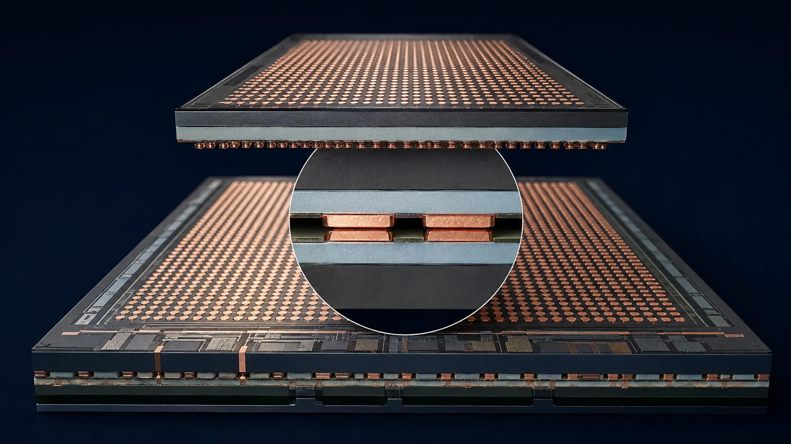
PUBLIC-PROCESS TEACHING RECONSTRUCTION · INTERFACE NOT TO SCALE动画只比较结构与流程，不用屏幕上铜点数量冒充真实 I/O。pitch 更小也不自动等于系统带宽更高。
| 玩家 | 公开结构 | 截至 2026-09-05 状态 | 边界 |
|---|---|---|---|
| TSMC SoIC-X | Cu-Cu 无凸块 + TSV；CoW / WoW | N3 SoIC 2025 量产 | A14-to-A14 属 2029 路线图 |
| Intel Foveros Direct | Compute Tile 直连 Active Base，可再配 EMIB | Xeon 6+ 已上市 | 公开 9µm→3µm 是代际路线，不是所有产品当前 pitch |
| Samsung X-Cube HCB | 无凸块 HCB；另有 TCB 微凸点路线 | 当前官网仍称准备中 | 2026 enabled 路线图不能改写成规模量产 |
| AMD 3D V-Cache | 64MB 缓存裸片 + TSV + 直接 Cu-Cu | 客户端 / 服务器产品验证 | AMD 是产品应用者，不是对外销售键合工艺的 foundry |
设备机会不是一台键合机，而是一整条表面活化、CMP、清洗、检测、超精密对准、退火与键合后测试链。D2W 和 W2W 分别优化 KGD 灵活性与并行吞吐，没有脱离产品结构的绝对冠军。
Corsair 每个封装由 4 颗数字存内计算芯粒组成；一张卡有 2 个封装，共 8 颗芯粒。它把超快但很小的 与较慢但更大的 分开，选择有机基板和 LPDDR5，而不是 HBM / CoWoS。
每封装 4 颗芯粒以 all-to-all DMX Link 相连；单卡两个封装。屏幕连线只表达全互连关系，不表示真实走线位置或数量。
all-to-all DMX Link
8 chiplets · 600W
片上 SRAM-CIM 复合体
片外 LPDDR5
| 方案 | 计算位置 | 公开状态 | 先进封装关系 |
|---|---|---|---|
| Samsung HBM-PIM / AXDIMM | DRAM bank 旁 / DIMM buffer | 系统或客户验证 | HBM-PIM直接相关；AXDIMM主要是模块级近存 |
| SK hynix AiMX | GDDR6-AiM 卡 | CES 2026 仍称 prototype | 传统板卡路线，不必依赖 CoWoS |
| UPMEM | DRAM 内可编程 DPU | 可购买 DIMM / 系统 | 传统 DIMM，价值更偏芯片与软件 |
| d-Matrix Corsair | 数字 SRAM-CIM chiplet | 公司称 full production | 多芯粒 FCBGA + 有机基板 + LPDDR5 |
| Samsung LPDDR5X-PIM / zHBM | LPDDR 内计算 / HBM 垂直叠于加速器 | 展示 / 概念模型 | zHBM 若落地将强拉动 3D 键合；目前不可算收入 |
片外最高 256GB 容量内存为 400GB/s；两者不能混成“256GB、150TB/s”。同理，厂商给出的推理倍数必须统一模型、精度、batch、context、SLA 与墙上功耗后才能比较。
这是一条“用成熟 N6、有机基板和 LPDDR5 换供应确定性”的路线。真正壁垒仍包括 DIMC 电路、芯粒全互连、编译器与模型切分。公司称夏季向优先客户批量交付，但公开单位出货、广泛云端部署与收入贡献仍需验证。
玻璃芯与面板级封装是两件可以组合、但不能混为一谈的事。玻璃芯是把最终封装基板的核心材料换成更平整、尺寸更稳定的玻璃；面板级封装则是把圆形晶圆改成方形大板作为制造载体，希望更充分地排布大封装。前者改变成品结构，后者改变生产格式，两者都还要面对通孔、细线、翘曲、搬运、检测和良率问题。
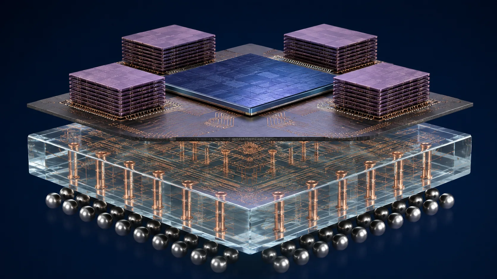
PUBLIC-CONCEPT TEACHING RECONSTRUCTION · NOT A VENDOR PRODUCTMATERIAL × MANUFACTURING FORMAT
图中一颗逻辑裸片与四组 HBM 仅用于解释层次，不代表 Intel、Absolics、Samsung 或 ASE 的公开客户产品。
9→16 是 ASE 对同一大型模块给出的特定版图示例：排布数量约多 78%，但方板毛面积只约多 36%。它不能直接外推为良率、产能或利润提升。
| 玩家 | 公开动作 | 当前状态 | 最重要边界 |
|---|---|---|---|
| Intel × Lens Technology | 玻璃基板研发与精密玻璃协作 | 探索合作 / 本十年后半段目标 | 10×互连密度与50%更低图形畸变是Intel口径，不是客户HVM |
| Absolics / SKC / Applied Materials | Georgia 线、Embedding 与 Non-Embedding 两条产品 | 可靠性验证 / PoC 准备 | “量产厂房”不等于产品已经量产 |
| Samsung Electro-Mechanics | 与 Sumitomo / Dongwoo 设 GlaSSEM JV | 目标 FY2027 下半年供货体系 | 现有服务器 FCBGA 量产不能外推为玻璃芯量产 |
| ASE 310×310mm | FOCoS 2/2µm；FOCoS-Bridge 8/8µm | 目标 2027 Q1 开始生产 | 9→16是特定设计，不是通用成本或良率承诺 |
真正壁垒是大面积微孔/TGV、铜金属化、2/2µm 线路、overlay、玻璃搬运、边缘裂纹、die shift、自动检测与可修复性。最值得跟踪的顺序是：付费送样 → 完整可靠性 → 多批良率 → 客户 design win → HVM 与重复订单。
这一案例把最新公开论文拆成五层：定律是什么意思、LogicFolding 如何设计、晶圆级混合键合怎样制造、热与功耗如何取舍，以及 AI 系统的 3D Folding 路线图。
不是一种新的封装胶、键合机或制程节点，而是一套跨层设计方法：把，也就是器件开关、信号传播、数据搬运和系统同步中的等待时间，当作共同优化目标。并非把所有电路盲目叠高，而是优先把通信频繁、容易被线路电阻和电容拖慢的关键单元上下靠近。垂直连接本身也会占面积、产生寄生并带来热耦合，只有缩短横向走线得到的收益大于这些新增开销，折叠才有实际意义。
降低晶体管和局部铜线的电阻、电容，让最底层动作更快。
像把水龙头和最近一段水管同时改顺。用缩短与。
不是只堆密度，而是重排谁和谁靠近。软件、架构与芯片协同，提高并行度并减少无效数据移动。
让任务少排队、少搬运、少空转。以等技术减少协议转换和跨节点等待。
把一群机器组织成更像一台机器。τ 不是一只固定秒表：器件、线路、芯片与系统各有自己的等待时间；价值在于让所有团队用同一方向做取舍。
MTr/mm² · 按所列整数计算约 +53.5%；论文摘要称 +55%
作者披露的 bond pitch
同节点 · 1.1V · 环境温度条件
0.9V 对基线 1.1V · 作者测量
LATEST PREPRINT · 2026-09-04
最新后续预印本称，缩短布线后可把拿去降电压；同时用避免高功耗模块上下相邻。下列均为作者在条件下披露的模块结果，不是整颗手机 SoC 的统一降幅。
2026-09-04 材料是 ChinaXiv 预印本，平台明确提示尚未经严格同行评审；这些是作者/华为披露，尚不能替代独立复现、长期可靠性、良率和量产成本验证。更低总功耗也不自动代表更低。
DESIGN → PROCESS → TEST
公开论文给出了结构、关键尺寸和部分硅片结果，但没有公开完整工艺配方。第 3 步的 CMP / 清洗 / 活化是混合键合通用流程，不代表华为专有 recipe。
把数字、模拟和存储电路跨放置，优先折叠关键路径。
论文明确上下晶圆可来自不同批次，甚至不同节点；必须预留跨层时序余量。
论文明确以、清洗与表面活化获得超平、无颗粒界面。
行业通用流程的；论文称 1.5µm pitch、overlay <0.5µm。
作者披露负责垂直信号/电源；要扣除与自身 RC。
作者披露、及热/应力测试共同收口。
论文明确| 公开层级 | 披露内容 | 截至 2026-09-05 | 必须保留的边界 |
|---|---|---|---|
| 韬定律方法论 | τ 跨器件—电路—芯片—系统；2020—2026 期间 381 款芯片量产经验 | 期刊 Position Paper + 公司实践 | 381 款是“基于 τ 原则”，不是 381 款均采用 LogicFolding 或 3D 堆叠 |
| Kirin 2026 | 双有源层、选择性关键路径折叠、1.5µm W2W 混合键合 | Silicon；官方称 2026 秋季面世 | 截至本材料时点，公开产品名、拆解、成本与第三方测试仍不足 |
| 9 月 4 日热 / 功耗论文 | NPU / GPU / P-core 同等性能功耗分别 −66% / −58% / −41% | ChinaXiv 预印本 | 作者测量、模块口径；不能外推为整颗芯片或所有负载 |
| AI 系统当下 | Unified Bus + ；chiplet、2.5D fan-out、微凸点 / 标准间距混合键合组合 | 部分系统实测 + 多种成熟工艺 | 不等于 Ascend 已采用细粒度 LogicFolding |
| Ascend / 3D Folding | 把 HBM、光 I/O 与供电从周边搬到表面，解决扩展差 | 约 2030—2035 路线图 | 论文把 Ascend 990 引入 LogicFolding 放在约 2030；>100×集成度为 2035 预测 |
| 远期密度目标 | 2031 年 400+ MTr/mm²；华为新闻称达到 1.4nm 制程同等晶体管密度 | 公司目标 | 只是密度等效，不是实际 1.4nm 节点，也不代表性能、功耗、成本全面等效 |
最重要的技术判断式：缩短有效硅面积与横向走线带来的 τ 收益，必须大于混合键合、TSV、、热和测试带来的代价。论文称移动关键路径与存储已跨过阈值；全芯片、多层与不同工作负载仍需逐项验证。
若路线持续兑现，增量价值不只在键合机：还会流向、CMP/清洗、超精密对准、混合键合、TSV、量测检测、热仿真、键合后测试与可修复设计。AI 侧还会拉动、、HBM、近封装光学和；但应以产品复用、第三方验证和每颗合格芯片成本作为兑现标准。
09 · YIELD ECONOMICS
当多颗裸片、内存和大量互连一起组装时，一处失效就可能拖累整个模块。理解先进封装良率，需要把晶圆测试、已知良品、组装、最终电测、系统级测试与返修串成一条完整流程。
估算模块良率
72.8%为什么这里只是示意模型：公式暂时把每颗裸片和每道工序视为相互独立，便于观察“裸片数量增加”怎样放大损失。真实制造中，缺陷可能集中在同一批晶圆、同一块基板或同一温区，良率还会受到返修、冗余设计和缺陷相关性的影响。
KGD 是“已知良品”，意思是在组装前尽量筛掉明显失效的裸片。晶圆测试可以检查通断、速度和部分功能，却很难完全复现封装后的温度、供电和高速互连环境，因此它降低的是组合风险，不是对最终模块的绝对保证。
DFT 是在设计阶段预留测试入口、自检电路和故障隔离路径。多芯粒封装完成后，探针未必还能直接接触每颗裸片；若没有提前设计访问通道，就很难判断问题来自计算芯片、存储、互连还是封装工艺。
SLT 会让成品在接近真实系统的电源、温度、软件和数据流下运行，用来发现普通电测难以捕捉的间歇性链路、热点、压降和协同故障。它更接近实际使用，但测试时间较长，通常要与晶圆测试和最终电测分层配合。
示意而非行业统一比例。设备能够处理多少片，只代表理论上限；材料等待、设备调试、产品认证、工艺波动、测试失败和返修都会逐级减少最终可交付数量。
10 · CHINA STARTUP MAPPING
这不是完整融资名单，而是一张技术样本图：封装平台、设备与材料、EDA / 测试、Chiplet 互连方案、光电共封装分别解决什么问题，以及公开进度走到哪一步。
平台型公司负责重布线、中介层、贴装、键合、塑封、基板连接和最终测试。它们的难点不是掌握某一个步骤，而是让不同材料和设备在同一条流程中稳定配合，并支持客户反复复用。
先进封装把部分前道级精度带到后段制造，需要更洁净的表面、更准确的贴装和更细致的缺陷检测。设备还要与材料、治具和工艺配方协同，单次演示成功并不代表连续生产稳定。
ABF、玻璃、临时载板、底填、模塑料和导热材料分别承担绝缘、支撑、保护和散热。材料参数必须与铜布线和硅芯片匹配，否则热循环后容易出现翘曲、分层或连接疲劳。
EDA 工具要同时处理多裸片布局、信号完整性、供电、热和机械应力；量测与测试则确认细线、通孔、键合界面和高速链路是否可靠。封装越复杂，定位“究竟是哪一层出了问题”越重要。
CPO 相关公司可能提供硅光芯片、电子驱动、激光、光纤阵列、耦合设备或自动测试。真正产品需要同时满足电气、光学、热与维修要求，因此单个器件可用只是整条链路的第一步。
D2D / UCIe 接口、I/O Die 和 Base Die 决定芯粒之间如何传递数据、时钟和控制；封装平台再用中介层、RDL 或混合键合把连接做出来。IP 已有产品不等于整颗芯片已量产，还要继续看流片、互操作和客户项目。
进度只采用公司官网、政府 / 监管披露等可追溯口径；“公司称量产”不等于第三方审计收入，“产能规划”也不等于已经达产。盛合晶微已上市，仅作为行业基准；盘古 / 通格属于上市公司控股平台，均单独标注，不与独立创业公司混为一谈。
SOURCES & SCOPE
优先采用标准组织、公司官方技术资料、监管与行业机构来源。厂商“领先 / 首个”等说法按厂商口径呈现；路线图不等同于已量产。
本材料用于行业学习与投资研究框架，不构成证券、法律或税务意见。市场份额、价格、产能与产品路线会变化，正式决策前应以公司公告、客户验证与最新尽调为准。
内容时点：2026-09-07